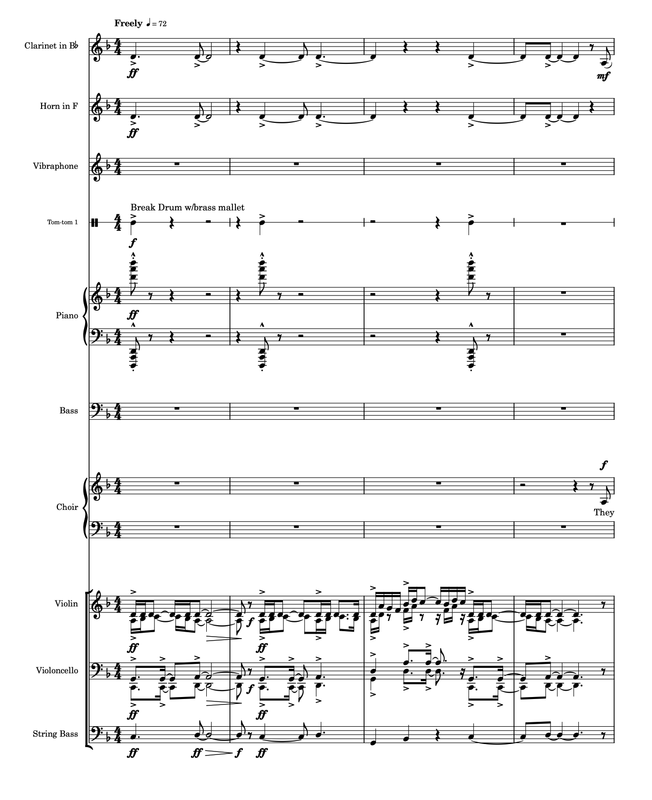
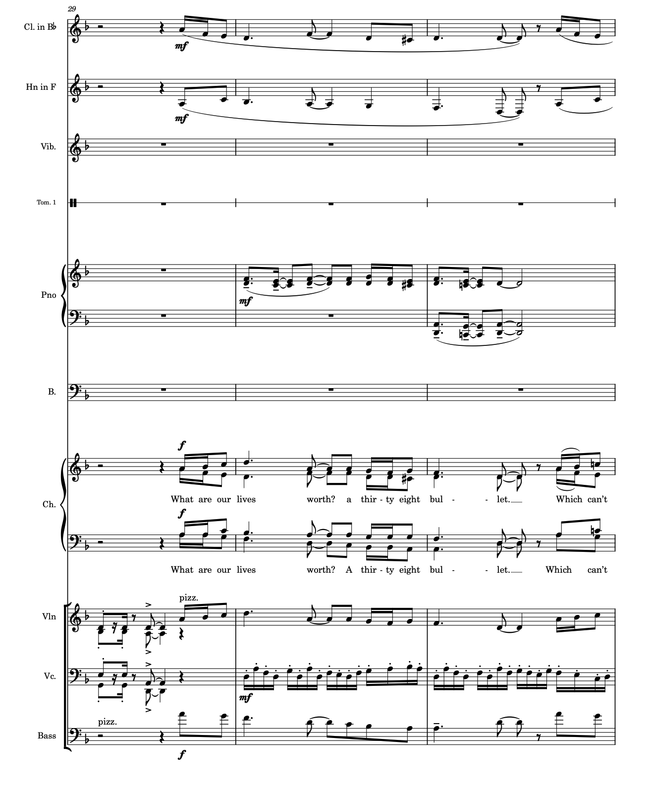
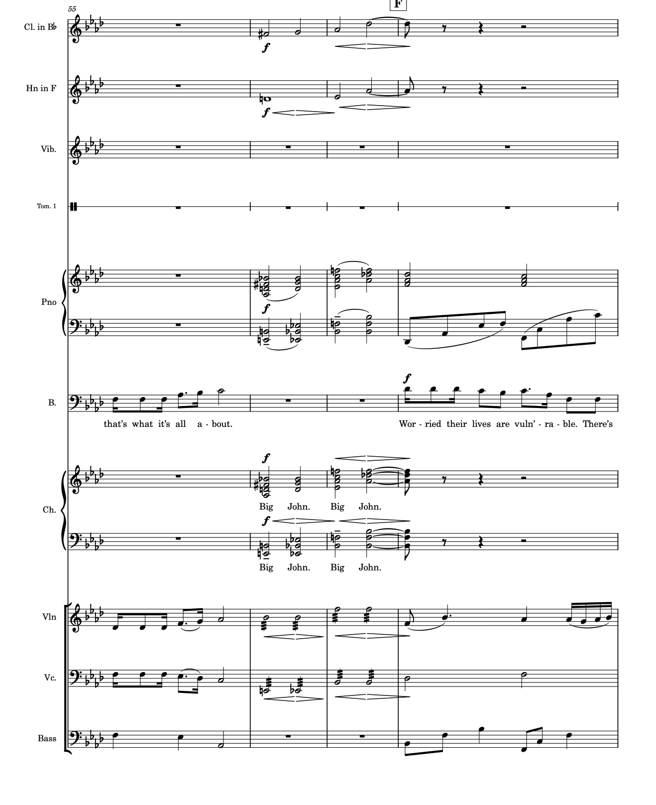

John Henry, a two-act musical with a libretto by Ruth Hernandez and music by Joseph Dangerfield, sets the American folk legend of the steel-driving man against a story of loss and resilience in the present day. When community leader Big John Hobbs is killed at a peaceful demonstration, his twin children retreat into silence — until a caseworker, Odetta Lewis, begins telling them the story of another John Henry: born into slavery in Kentucky, freed by the Emancipation Proclamation, and remembered for the day he raced a steam drill through a West Virginia mountain rather than watch his fellow railroad workers lose their livelihoods to a machine.
As the two timelines unfold side by side, the show moves from a cotton plantation to a freedmen's railroad camp to a present-day office where a grieving family relearns how to speak. Blending traditional spirituals and folk ballad with original song, John Henry asks what it means to carry a legacy forward — and which side of history each generation chooses to stand on.



“Never Forget” — demo backing track